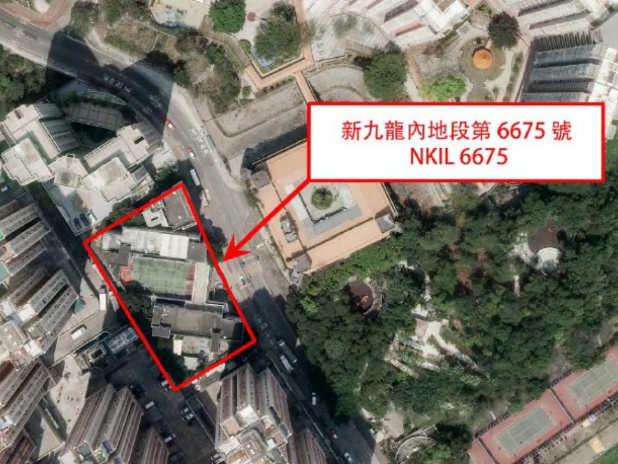
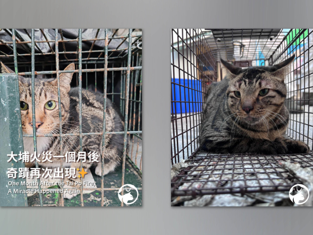
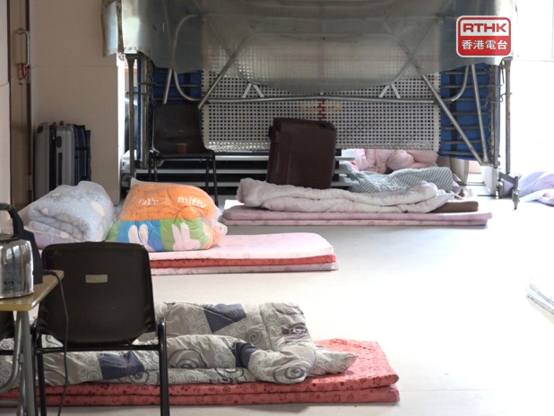
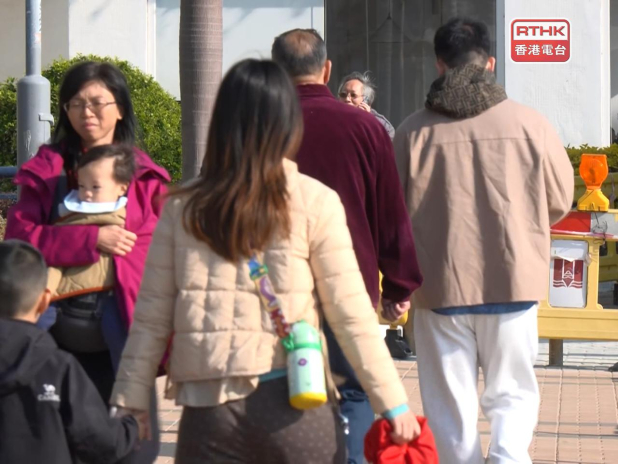

1. 韓團IVE張員瑛錯稱香港為「國家」遭內地網民抵制 mingpao
2026-01-02 19:54 HKT
韓國女團IVE成員張員瑛最近透過YouTube頻道公開早前來港參加MAMA頒獎禮的幕後花絮片段，其間大讚香港多美食，希望吃一頓豐富晚餐，直言：「我喜歡香港，有好多好吃的東西，是我喜歡的國家之一。」
又說：「我今天想吃北京烤鴨。」
2. 陳柏宇相隔6年再奪叱咤男歌手獎 宣布今年7月紅館開騷 mingpao
2026-01-02 19:50 HKT
陳柏宇（Jason）昨晚（1日）叱咤頒獎禮奪得2獎，包括相隔6年再奪男歌手銅獎，以及一首叱咤十大。
今晚（2日）Jason在社交平台貼了多張相並發文訴心聲，兼宣布今年7月重返紅館開騷。
3. 周大福創建第二階段收購uSmart失效 續持13%股權 mingpao
2026-01-02 19:47 HKT
周大福創建（00659）公布，有關進一步收購持有盈立證券等業務的uSmart Inlet Group Ltd及智能企業股權的第二階段協議已失效。
4. 陳振英稱參選主席獲多人支持 李慧琼感謝不同界別議員提名 RTHK
2026-01-02 19:43 HKT
新一屆立法會主席的職位，將由身兼全國人大常委的民建聯議員李慧琼，與身兼港區人大代表的金融界議員陳振英競逐。
陳振英回覆本台查詢時表示，擔任了兩屆議員，累積豐富的會議主持經驗，包括合共7年的財委會正、副主席，期望結合過往在銀行業界培養的良好溝通能力，發揮在立法會的重要崗位上，他認為，這個想法得到多位同事的鼓勵和支持，是參選的主要動力。
他又表示，特首在新一屆立法會宣誓時提出三個期盼，強調會致力推動行政立法良性互動，推動高質高效議政，確保立法會理性務實履行憲制責任，回應市民期望，自己亦會著手準備論壇的参選政綱並於1月8日詳細解答議員的提問。
李慧琼回覆傳媒查詢時說，正積極準備相關工作，感謝傳媒關注和多位來自不同界別議員提名她。
5. 新能源汽車出口帶動 深圳港去年集裝箱吞吐量逾3500萬標箱創新高 mingpao
2026-01-02 19:34 HKT
深圳港2025年全年集裝箱吞吐量突破3500萬標準箱，較2024年增長逾5%，創開港以來新高。
深圳市交通運輸局透露，新能源汽車出口成為深圳港增長新引擎。
6. 陳偉霆何穗曬家庭照 B仔趴半裸爸爸背脊 父子情滿瀉 mingpao
2026-01-02 19:24 HKT
陳偉霆和內地名模何穗去年10月毫無預警下宣布做父母，2人迎來囝囝「小太陽」，眨眼B仔已經滿月，何穗產後已火速收身，現時專心湊仔，今天（2日）何穗在社交平台貼出家庭照，相中B仔趴在半裸爸爸陳偉霆背脊，父子情滿瀉。
7. 上海學者：中美須降低台海競爭熱度 mingpao
2026-01-02 19:18 HKT

上海復旦大學美國研究中心主任吳心伯近日在美國雜誌發表文章指出，中美必須降低在台灣海峽的競爭熱度，倘若華府可發揮影響力確保台北不跨越任何紅線，北京也應展現誠意，減少在台灣周邊的軍事活動。
吳心伯於2025年12月31日在《外交事務（Foreign Affairs）》雜誌在線發表題為《The Case for a Grand Bargain Between America and China（論中美大交易）》文章，內容提及中美關係發展影響最為深遠的挑戰在於台灣議題。
吳心伯表示，為了實現中美大交易，必須從貿易、投資等開始。
中美經濟具備互補性，儘管經歷美國總統特朗普第一任期貿易戰、2025年4月「對等關稅」，中美貿易與經濟聯繫還是強勁；2025年雙邊談判成果可以延續，「互惠」是任何可能協議的基礎。
吳心伯直言，中美在亞太地區地緣政治角力是達成大交易的主要障礙，雙方都應意識自身侷限性，中國可以擴大區域影響力，不過無法主宰亞太地區；美國無法阻擋中國做為區域大國的崛起態勢。
吳心伯提到朝鮮半島、南海等議題，點名台灣議題是中美關係未來發展最大的挑戰。
他說，為了避免戰爭與達成大交易，中美必須降低在台灣海峽的競爭熱度，減緩目前圍繞台灣的軍事化趨勢。
他說，對於北京來說，守住底線又避免衝突的最佳路徑是堅持「和平統一」，表明武力不是首選手段，不過也不會接受任何形式台獨行徑。
特朗普對於台灣議題展現顯著的戰略模糊，在這一問題上保持克制，有利於中美達成大交易。
（中央社）
8. 周深元旦夜啟德壓軸《財神到》 粵語金曲掀全場大合唱 mingpao
2026-01-02 19:17 HKT
周深成為首位登上香港啟德體育園主場館舉行跨年演唱會的內地歌手，兩場《周深2025「深深的」巡迴演唱會—香港站‧跨年紀念場》昨晚（1日）圓滿結束。
演唱會開場，他連續獻唱《浮游》等作品，隨後以普通話歡迎觀眾蒞臨，再以廣東話表示：「大家好，我是周深，歡迎大家來我的演唱會見面。
我是第一位歌手在啟德開跨年演唱會，多謝在座每一位朋友，是你們讓我去到很多以前都跟不上的地方，多謝大家，很開心跟大家見面。」
9. 西營盤海濱公園啟用 短片看充氣遊樂設施「片片雲海」、旋轉平台、嬉水嬉沙區 mingpao
2026-01-02 19:15 HKT

港島西營盤海濱公園現已開放，公園貫通中山紀念公園及西區副食品批發市場的海濱長廊，本文以短片帶讀者一看西營盤海濱公園特色。
（拍攝及剪接︰卓朗為）
戶外充氣遊樂設施「片片雲海」據發展局介紹，西營盤海濱公園的「片片雲海」是全港公共空間首個雲朵形狀的戶外充氣遊樂設施，具備防滑與緩衝特性，可同時容納多名兒童玩樂。
「片片雲海」現場有工作人員實時監察及指導，保障安全；每節約10分鐘，最多可同時容納20名小朋友。
「片片雲海」開放時間周一至五 上午11時至下午8時周六、日及公眾假期 上午10時至晚上9時
此外，西營盤海濱公園設大型旋轉平台、嬉水嬉沙區、觀景平台、搖擺韆鞦和日落滑梯等。
10. 紫金鄒來昌：關注超大型礦產及中型礦業公司併購 mingpao
2026-01-02 19:11 HKT
紫金礦業（2899）新任董事長鄒來昌在官網發表新年致辭，他指，公司將加大戰略性礦產資源獲取力度，以金、銅為重點發展礦種，全面形成具有全球競爭力的鋰板塊。
他將密切關注有重大影響力的超大型礦產及中型礦業公司併購機會，堅持全球發展同時，亦加大國內重點區域的資源投資開發力度。
他更表示，集團會開足馬力釋放金銅等主力礦種產能，實現在產項目穩產高產。
11. 港鐵：九龍灣站附近有信號故障 觀塘線行車時間需額外5至8分鐘 mingpao
2026-01-02 19:10 HKT
港鐵指，觀塘線九龍灣站附近有信號故障，觀塘線行車時間預計需要額外5至8分鐘。
12. 港鐵九龍灣站附近信號設備不暢順 觀塘綫行車額外多5至8分鐘 RTHK
2026-01-02 19:09 HKT
港鐵表示，由於觀塘綫牛頭角站與九龍灣站之間有信號設備運作不暢順，列車經過有關路段時要以較慢速度行駛，觀塘綫的整體行車時間預計需要額外5至8分鐘。
目前黃埔站來往彩虹站維持4分鐘一班，彩虹站來往調景嶺站維持6分鐘一班。
港鐵人員正處理事件，乘客需為行程預留充裕時間。
13. 存酒人｜朱栢謙角色天真盼觀眾喜歡 徐㴓喬楊樂文爆曖昧 mingpao
2026-01-02 19:05 HKT
在ViuTV原創劇《存酒人》飾演「市井酒吧」老闆雄哥的朱栢謙，形容角色是很有義氣的人，希望觀眾會喜歡：「講到戇居、被人笑、癡情、濫愛就係佢。
見到身邊人有需要時就拔刀相助，想好型又型唔起，但係勝在就有一顆好熾熱嘅心。
有一種喺呢個世界上罕有天真，好多人都想追求或者喺𠵱家好缺嘅嘢。」
14. 王文濤：敞開大門透氣 同時裝紗窗防蚊蟲 mingpao
2026-01-02 18:58 HKT
中國商務部部長王文濤近日在最新一期《求是》雜誌上發表署名文章，闡述中國在高水平對外開放進程中的核心方針與實踐路徑。
文章強調，中國將堅定不移地擴大開放，以此為世界提供新的機遇，同時也必須統籌發展與安全，有效防範伴隨開放而來的各類風險。
王文濤在文中指出，「我們敞開大門，讓『新鮮空氣』進來的同時，也要裝好『紗窗』，防範隨之而來的『蚊蟲』。」
中國在持續推進對外開放的過程中，對風險管控與安全保障的認識達到了新的高度，開放政策將更加註重系統性與可調控性。
（求是雜誌）
15. 牛頭角彩霞道住宅地下周五起招標 下月6日截標 RTHK
2026-01-02 18:52 HKT
地政總署公布，將公開招標出售在2025至26年度賣地表內位於九龍牛頭角彩霞道的新九龍內地段第6675號用地。
招標詳情會於1月9日刊憲，同日開始招標，2月6日截標。
地盤面積約為3132平方米，指定作非工業不包括倉庫、酒店及加油站的用途。
最低樓面面積為16913平方米，作私人住宅用途的最高樓面面積可達23490平方米，作非工業用途的最高樓面面積則按照賣地條件中的相關特別條件計算。
賣地文件包括投標表格、招標公告、賣地條件及賣地圖則，將於1月9日上載至地政總署網頁供公眾人士下載。
賣地圖則會於同日起至截標前供公眾人士查閱，公眾亦可到北角政府合署6樓地政總署測繪處購買印刷本。
16. 零售協會：11月零售環境平穩 電器類受低基數及新品帶動 mingpao
2026-01-02 18:44 HKT
香港零售管理協會主席謝邱安儀表示，11月份本港零售環境整體平穩，但月底因大埔火災以致社會氣氛轉差，影響消費意欲，超過六成受訪會員反映生意受影響。
她指出，11月零售額錄得6.5%升幅，主要受低基數效應影響，屬溫和回升。
17. 衞防中心去年錄82宗基孔肯雅熱個案 11宗屬本地個案 RTHK
2026-01-02 18:42 HKT

衞生防護中心截至今日下午5時，沒有錄得新增感染基孔肯雅熱個案。
本港去年累計錄得82宗基孔肯雅熱確診個案，當中11宗屬本地個案，其餘全部屬輸入病例。
因應去年11月有多宗基孔肯雅熱本地個案的患者，曾到訪青衣自然徑一帶，該處目前暫停開放，直至另行通告。
相關政府部門會繼續在該自然徑進行大規模的化學滅蚊及其他防控工作，中心忠告市民不應擅進。
自去年12月10日確診一宗、曾經前往青衣自然徑的個案後，至今再沒有錄得本地感染個案。
中心繼續呼籲曾在青衣自然徑行山的人士若出現相關病徵，應盡快求醫，並致電設立的查詢熱線2125 2373。
食環署持續在青衣自然徑一帶進行密集式霧化處理以殺滅成蚊，又聯同葵青民政事務處、地政總署及渠務署在該處加強清除潛在蚊子滋生地，並向行山人士派發宣傳單張，呼籲市民提防蚊患及採取個人保護措施。
18. 【重溫】2026年1月2日新聞天地 RTHK
2026-01-02 18:40 HKT
詳盡報道本地時事、大中華消息、國際局勢等新聞，緊貼最新熱話。
19. 叱咤｜李幸倪蟬聯女金 「阿金」吉利添動力 孖Jay創作新歌 mingpao
2026-01-02 18:39 HKT
李幸倪（Gin Lee）在昨晚叱咤頒獎禮，蟬聯女歌手金獎兼奪得一首叱咤十大，Gin坦言現今當歌手困難，需要懂十八般武藝，且看天時、地利、人和，覺得自己追夢路上很孤單，曾多次質疑自己，所以去年與馮允謙（Jay）一起寫歌詳談時，大家很有共鳴，她說：「我拿過4次銀獎，所以我很明白Jay的感覺，攞銀獎都很開心，但自己總想再有進步，終於攞到金獎，覺得大家叫我『阿金』這個名很吉利，暫時未覺得有壓力，反而帶給我推動力。」
20. 中芯國際再獲國家集成電路基金增持3.6億股 持股升至逾9.2% mingpao
2026-01-02 18:32 HKT
聯交所權益披露顯示，國家集成電路產業投資基金在2025年連續兩次減持中芯國際（0981）股份，股權由2025年3月的6.91%跌至2025年7月2日的4.97%後，在2025年12月29日披露以每股74.2元（人民幣，下同）增持約3.57億股，令持股升至7.4億股，持股升至9.25%。
21. 彩霞道住宅地招標 估值最高逾20億 mingpao
2026-01-02 18:32 HKT
正當佐敦谷彩興路住宅地今日截標、收到8份標書之際，地政總署剛公布，將公開招標出售牛頭角彩霞道的新九龍內地段第6675號用地，地盤面積約3.37萬方呎，指定作非工業（不包括倉庫、酒店及加油站）用途，最高樓面面積25.28萬方呎。
地皮於下周五（9日）招標，下月六日截標。
22. 宏福苑五級火｜元旦及聖誕節宏仁閣尋回生還貓隻 愛協稱奇蹟 RTHK
2026-01-02 18:30 HKT
大埔宏福苑火災發生超過一個月後，昨日再有生還的寵物貓隻被發現。
愛護動物協會在社交專頁表示，在聖誕節前夕獲批准可以在宏仁閣擺放少量捕貓籠及攝錄機，發現聖誕節當日有貓隻入籠，愛協人員將貓隻送往檢查，身體很健康沒有大問題，主人亦已將貓接回家。
愛協表示，昨日再成功捕獲一隻貓，雖然貓隻仍未定驚，但主人已到愛協預備接貓回家，愛協形容是奇蹟出現。
愛協又說，警方已批准下星期在其餘5座大廈擺放捕貓籠，希望可以繼續尋找仍然失蹤的寵物貓。
愛協早前表示，大火中發現逾500隻動物，逾300隻生還，有數十隻寵物未能尋獲。
23. 持雙程證內地男涉除夕夜違例操作無人機 准保釋候訊 mingpao
2026-01-02 18:26 HKT

除夕夜大批市民和遊客聚集尖沙嘴，警方在海港城海運大廈停車場拘捕一名33歲內地男子，他涉違例操作小型無人機。
案件今（2日）在九龍城裁判法院提堂，男子控以「未經許可在限制飛行區以內飛行小型無人機」及「未有遵從操作小型無人機進行飛行的操作規定」共兩罪。
裁判官將案件押後至2月27日再訊，男子獲准以1萬元現金保釋。
男被告徐康然（33歲）報稱無業，持有往來港澳通行證。
控罪指，被告2025年12月31日在九龍尖沙嘴梳士巴利道海港城海運大廈停車場內，作為一名遙控駕駛員，操作小型無人機DJI型號Mavic 4 Pro，沒有許可下在該限制飛行區內進行飛行。
被告另被控於同日同地作為一名遙控駕駛員，操作上述小型無人機，沒有遵從適用於該無人機的所有操作規定的情况下被操作操作該無人機，即該無人機在指明時間及高度外被操作進行該次飛行。
24. 兩隻貓於大埔宏福苑火災現場奇蹟獲救 分別於聖誕及元旦走入捕貓籠 mingpao
2026-01-02 18:19 HKT

再有兩隻貓於大埔宏福苑宏仁閣火災現場奇蹟獲救。
愛護動物協會指，聖誕前夕獲准在宏仁閣擺放少量捕貓籠和攝錄機。
聖誕節當日有一隻貓走入籠中，送往愛協檢查後，證實貓隻身體健康，並已由主人接走。
及至元旦日，另一隻在災場生還的貓隻獲救，愛協指貓隻暫時仍未定驚，但主人已預備接走。
愛協提及，已獲警方批准在下星期於其餘五座大廈擺放捕貓籠，希望可尋獲更多失蹤貓隻。
25. 郭老太大除夕近3092萬元增持新地至28.13% mingpao
2026-01-02 18:16 HKT
新鴻基地產（0016）主要股東郭老太鄺肖卿以個人名義自願申報，在去年大除夕12月31日於市場內以每股平均價94.5466元，增持新地32.7萬股，總代價約3091.67萬元。
完成增持後，鄺肖卿在新地的持股由原來的28.12%增至28.13%。
26. 韓團Seventeen世巡香港站加場 門票月底開售 mingpao
2026-01-02 18:15 HKT
韓國人氣男團Seventeen去年9月在啓德體育園主場館舉行兩場演唱會，全場爆滿，氣氛熱烈，成員當時表示希望再次來港「安歌」，如今願望成真，Seventeen將於2月28日及3月1日重返啟德主場館，加開兩場《SEVENTEEN WORLD TOUR [NEW_] IN HONG KONG》演唱會。
27. 謝邱安儀：宏福苑大火後社會哀傷 六成零售商會員稱生意受影響 RTHK
2026-01-02 18:12 HKT
本港去年11月的零售業總銷貨價值臨時估計數字為337億元，按年升6.5%。
香港零售管理協會主席謝邱安儀形容，11月份的整體零售市況平穩，雖然按年有單位數字增長，但稱不上市道復穌。
她又表示，11月26日大埔宏福苑大火發生後，整個社會都很哀傷，六成受訪會員指銷售情況受到影響。
謝邱安儀又提到，12月份聖誕和除夕節日因素，帶動旅客訪港，預料珠寶、鐘錶等行業能夠受惠。
28. 叱咤｜馮允謙破宿命首奪男金爆喊 揭跟女友押後婚事原因 mingpao
2026-01-02 18:11 HKT
李幸倪（Gin）在昨晚（1日）叱咤頒獎禮蟬聯「女歌手金獎」，馮允謙（Jay）首奪「男歌手金獎」，2人得獎後一起受訪，大爆雙雙喜極而泣，Jay說：「我領完獎落台時，即時爆喊！」Gin表示見到Jay得獎，憶起去年首奪女歌手金獎的喜悅，非常感動：「我很明白Jay的感受，被Jay搞喊埋我，我等他奪金等了很多年，終於等到了，替他開心。」
29. 李慧琼與陳振英角逐立法會主席 下周四出席論壇回應議員提問 RTHK
2026-01-02 18:10 HKT
新一屆立法會主席的職位，將由身兼全國人大常委的民建聯議員李慧琼，與身兼港區人大代表的金融界議員陳振英競逐。
李慧琼和陳振英的提名人，分別是自由黨主席邵家輝和經民聯黨魁吳永嘉，各有9名議員附議。
立法會下星期四早上9時30分將舉行2小時的特別論壇，讓候選人陳述競選綱領，各有5分鐘發言時間，之後進入回答議員提問環節。
論壇完結束後將小休10分鐘並隨即舉行選舉，議員以不記名方式投票。
30. 油麻地警署光影之旅展覽今開放 首3日門票售罄 RTHK
2026-01-02 18:08 HKT
在舊油麻地警署原址舉行的「油麻地警署光影之旅」展覽，今日向公眾開放。
展覽以經典港產警匪片做主題，重新建構昔日的「雜差房」、「槍房」、「羈留室」等，吸引不少港產片「粉絲」入場。
展覽每節參觀時間25分鐘，最多20人。
有市民表示，展覽整體不錯，但參觀時間太短。
展覽正價門票30元，要在網上預訂，不設現場售票，開幕首3日的門票已經售罄，首兩星期會「朝9晚10」開放。
31. 民政事務總署各區開放共18間臨時避寒中心 RTHK
2026-01-02 18:07 HKT
民政事務總署已在各區開放共18間臨時避寒中心，供有需要的市民避寒。
中心會於寒冷天氣警告持續生效期間繼續開放。
開放期間中心會免費提供潔淨的墊褥和毛氈或棉被、熱食和熱水予入住人士使用。
為確保入住的人士可以在寧靜及不受干擾的環境下休息，任何市民或團體如希望送贈物品給入住者，須先聯絡中心職員進行登記，然後將物品放置在指定的室內地點。
中心職員會協助通知入住者有關安排，讓他們自行領取所需物品。
任何人士如需使用避寒中心或查詢有關在中心派贈物品的安排，可致電民政事務總署熱線2572 8427。
32. 德信中國上市地位本月7日取消 mingpao
2026-01-02 18:04 HKT
聯交所宣布，德信中國（2019）上市地位將由本月7日上午9時起取消。
33. 花旗料1月澳門賭收按月增2.9%至215億元 mingpao
2026-01-02 17:58 HKT
花旗發表報告跟進澳門賭收數據指，澳門最新公布去年12月賭收只有208.88億元，較其預期的220億元為低，料與貴賓博彩較低贏率所拖累有關，料有關業務的贏率有機會低過3%水平。
去年全年賭收達2470億元則超過政府預期的2400億元水平。
其料2026年隨著澳門舉辦多項盛事及表演活動如《音樂緣計劃2年度盛典》等，料今年1月份賭收會達215億元，較去年12月份再升2.9%，按年則升18%。
將一、二月合計，料兩個月賭收合計會達420億元，按年增長10.5%。
34. 紀鷺禧接替邢桂偉 任港交所風險管理委員會成員 mingpao
2026-01-02 17:55 HKT
港交所（0388）公布， 歡迎香港銀行同業結算有限公司新任主席紀鷺禧加入成為其風險管理委員會（法定）成員。
上述委任乃根據《證券及期貨條例》作出，紀鷺禧接替香港銀行同業結算有限公司前任主席邢桂偉出任該職。
35. 天文台：明早市區最低約12度 大埔沙田最低9度 RTHK
2026-01-02 17:54 HKT
天文台表示，冬季季候風會在明日為廣東沿岸帶來寒冷及乾燥的天氣，預測明早市區最低氣溫約12度，新界再低幾度。
根據天文台網頁，預測明早6時，打鼓嶺氣溫或降至6度；上水及石崗8度；流浮山、大埔及沙田9度。
天文台說，隨著季候風稍為緩和，隨後一兩日該區氣溫略為回升，但早上仍然清涼。
預料一股季候風補充會在星期一稍後抵達廣東沿岸，下週中期該區氣溫再度下降。
36. 冲遊泰國11｜胡慧冲訪紫色佛寺 黃婧靈大派表情包 mingpao
2026-01-02 17:53 HKT
胡慧冲（Roger）主持的TVB Plus旅遊節目《冲遊泰國11》昨晚（1日）播出新一集，他與拍檔黃婧靈（波波）繼續走訪泰國古都大城府，展現當地多元文化與特色景點。
37. 廣東出現今年首場霧凇 mingpao
2026-01-02 17:43 HKT

冷空氣南下，廣東多地1月2日持續出現低溫天氣，全省最低氣溫逼近0℃，並出現今年首場霧凇。
廣州2日最低氣溫跌至5℃以下，9時5分錄得全市最低氣溫僅3.9℃。
粵北更是寒意十足，當地最低氣溫逼近0℃，截至2日10時35分，韶關各縣市區均已發布寒冷橙色預警信號。
2日早晨，在低溫天氣影響下，韶關樂昌市坪石鎮天堂村馬王殿迎來新年首場霧凇，漫山銀裝素裹、玉樹瓊花，每一根枝條都被冰晶包裹。
氣象專家表示，此次冷空氣過程還將持續兩天左右。
（中新社）
38. 凱柏峰3房連天台戶呎價逾2萬 創項目現樓新高 mingpao
2026-01-02 17:41 HKT
信置（0083）及港鐵(0066)等發展、屬現樓的將軍澳日出康城凱柏峰，全盤累計售出1,820伙，套現逾136億元，現僅餘60伙待售，最新再沽出2伙，當中第2A座67樓F單位，3房1套頂層特色戶，實用面積923方呎、連天台705方呎，成交價1882萬元，實呎20,390元，創項目現樓開售的呎價新高。
39. 【久利生專欄】2025年財經大事回顧 mingpao
2026-01-02 17:30 HKT
黃金愈沽愈高 白銀見世代級泡沫
40. 佐敦谷彩興路住宅地收到8份標書 RTHK
2026-01-02 17:26 HKT
佐敦谷彩興路住宅地中午截標。
地政總署公布，合共收到8份標書。
市場對地皮估值最高22.3億元，平均每平方呎樓面地價6000元，有測量師因應近期賣地成績理想而上調估值。
地皮估計可建樓面面積37萬平方呎，其中住宅最高可建面積近31萬平方呎，需於2031年9月或之前完成。
中標發展商需興建嚴重智障人士宿舍和活動中心。
41. 李慧琼、陳振英報名角逐第八屆立法會主席 mingpao
2026-01-02 17:22 HKT

第八屆立法會議員昨日宣誓就任，立法會主席提名期今午（2日）截止，金融界議員陳振英及民建聯李慧琼獲提名。
立法會將於下周四（8日）舉行特別論壇，供兩人陳述其競選綱領和回答議員提問，緊接將選出主席。
根據提名名單，陳振英獲經民聯吳永嘉提名，附議議員包括經民聯梁美芬、簡慧敏、金融服務界李惟宏、進出口界鍾奇峰、楊永杰、新民黨陳家珮、工聯會黃國、陳宗彝及陳凱欣。
至於李慧琼則獲自由黨邵家輝提名，附議議員包括同屬民建聯的郭芙蓉、陳博智及陳恒鑌，另有林筱魯、管浩鳴、社福界陳文宜、會計界吳錦華、陳祖光及新社聯譚鎮國。
42. 李慧琼、陳振英角逐新一屆立法會主席 RTHK
2026-01-02 17:21 HKT
新一屆立法會主席的職位，將由身兼全國人大常委的民建聯議員李慧琼，與身兼港區人大代表的金融界議員陳振英競逐。
立法會主席選舉的提名期下午5時結束，秘書處接獲兩項有效提名，下星期四將舉行特別論壇，讓候選人陳述競選綱領和答問，並隨即舉行選舉。
51歲的李慧琼，本身是一名會計師，自2008年起晉身立法會，2012年至2016年期間曾出任行政會議非官守成員，2015年至2023年期間擔任民建聯主席。
她由2023年開始亦出任港區全國人大常委。
64歲的陳振英，出身銀行界，2016年起循金融界功能界別晉身立法會，2022年出任立法會財務委員會主席，同年亦當選港區人大代表。
43. 天氣｜天文台：周六續寒冷 早上市區最低12°C mingpao
2026-01-02 17:19 HKT

天文台表示，乾燥的冬季季候風正為廣東帶來普遍晴朗的天氣，本港今晚（2日）及明日（3日）天晴乾燥，明早寒冷，市區最低氣溫約12°C，新界再低幾度。
日間最高氣溫約17°C。
吹和緩至清勁北至東北風，高地間中吹強風。
展望隨後數日大致天晴及乾燥。
下周日（4日）及周一（5日）氣溫稍為回升，但早上仍然清涼。
下周中期氣溫再度下降。
（天文台）
44. 張與辰跨年演唱會哽咽落淚 與Aska合唱掀高潮 mingpao
2026-01-02 17:15 HKT
張與辰前晚（12月31日）在亞洲國際博覽館舉行《The Novara Ball》跨年演唱會，由晚上9時30分唱至翌日凌晨12時25分，與全場觀眾共同迎接2026年。
這是他一年內舉行的第2次個人演唱會，演出以「大宇宙」為主題，開場舞台燈光營造神秘幽暗氛圍，隨着主題曲《NOVARA》響起，全場氣氛瞬間澎湃，張與辰登場揭開序幕。
45. 叱咤｜康堤奪生力軍女金 勁過爸爸Eason 自評拍MV「戲屎」 mingpao
2026-01-02 17:13 HKT
陳康堤昨晚（1日）叱咤頒獎禮奪得生力軍女歌手金獎，她自言在保持身形方面沒有壓力，暫時控制得不錯，不需要跟媽媽徐濠縈（阿徐）跑步，她說：「媽媽外號叫『肯亞徐』，跟她跑步太辛苦，她跑步快到不見身影，我有被遺棄感覺。」
問她攞到好成績，沒有失禮爸爸陳奕迅（Eason），康堤自信地說：「我沒有這個想法，但屋企那位前輩歌手，當時攞到生力軍銀獎，我攞到生力軍金獎，（勁過爸爸？）是的！（在他面前炫耀？）不用，帶個獎回家就可以，但平時留意不到他生力軍獎放那裏，因為他太多獎。」
46. 梁天琦遭拒郵寄選舉宣傳單張提司法覆核許可 高院事隔近10年頒判辭駁回申請 mingpao
2026-01-02 17:11 HKT

本土民主前線前發言人梁天琦2016年參加立法會新界東補選落敗，他不滿選舉事務處拒絕免費郵寄包含「香港自治」、「勇武抗爭」等字眼的選舉宣傳單張，曾入稟高等法院申請司法覆核。
事隔約9年7個月後，高院日前頒判辭駁回司法覆核許可，並不作訟費命令。
梁天琦2018年裁定暴動罪成判囚6年，2022年1月在石壁監獄獲釋。
根據入稟狀，梁2016年2月將選舉宣傳單張的樣本交予郵政署審批，其競選經理收到郵政署電郵，指選舉事務處徵詢法律意見後，認為有關單張含有「不當字眼」，即「勇武抗爭」、「以武犯禁」、「異於中國的歷史」及「自治」等字眼，不符選舉事務處的指引，拒絕免費郵寄單張。
梁質疑選舉事務處的做法侵犯言論自由，要求法庭推翻有關決定。
高院法官高浩文在判辭表示，考慮書面文件後駁回司法覆核許可，不作訟費命令，判辭未提及裁決理據。
翻查資料，梁天琦參與2016年立法會新界東補選，取得6萬多票落敗，同年9月再參選立法會時，簽署確認信不再主張港獨，其後被裁定提名無效，無法參選，為首次有參選人被「DQ」。
47. 青年13歲時性侵9歲堂妹 判240小時社服令 mingpao
2026-01-02 17:10 HKT

一名青年涉於2015年、他13歲時在祖父中半山家中及灣仔辦公室性侵9歲堂妹，包括要求堂妹把玩他的陽具和口交。
8年後，事主在父母陪同下報警，堂兄終被起訴，他早前不認罪受審後，被裁定兩項「向年齡在16歲以下的兒童作出猥褻行為」及一項非禮罪成，案件今（2日）在沙田法院（暫代區院）判刑。
法官指，事情「過咗咁多年」，被告已在祖父公司從事穩定工作，加上被告早前還押候判等因素，終判處240小時社會服務令。
被告N.T.H現年23歲，事主X現年19歲，法庭早前替被告索取勞教中心、社服令及感化報告再作判刑。
辯方大律師朱千雪今進一步求情稱，被告同意報告建議，接受為期12個月感化令，又透露被告剛報讀跟祖父公司業務相關的工程及畫圖課程，他將繼續在祖父的公司工作，同時修讀有關課程。
朱重申，被告早前還押候判，得到深刻教訓，希望法庭予「仲係好年輕」的被告一次機會。
暫委法官黃國輝判刑時指，2015年案發時被告和X分別13歲和9歲，8年後事件報警處理，案件終在事發10年後審理，而「過咗咁多年」，被告已在祖父的公司從事穩定工作，形容本案「有一啲特殊嘅因素」。
黃官又提到，被告曾還押候判，感化和社服令報告亦把他「寫得好」，衡量各因素後認為判處社服令比感化令「好一啲」，終判處被告240小時社服令，並要求被告遵守一系列條件，包括在有需要時接受心理課程。
案中證供顯示，2015年某天，X和被告在祖父中半山寓所玩耍，其間被告在上鎖的廁所內摸X的胸部及下體，又要求X把玩他的陽具，當時X聽從被告要求，被告最終射精，然後問是否「很酷」；同年另一天，X和被告在祖父的灣仔辦公室玩耍其間，被告帶X進入一間房，將門上鎖及拉下窗簾，再要求X為他口交，又用陽具磨擦X的下體，不久後X感不自在並離開。
黃官早前裁決時稱，X的證供清晰，是誠實可靠的證人，並指被告曾主動鎖門或拉下窗簾，可見他知道自己行為不當，終裁定被告3罪罪成。
48. 機電署因應中電電力事故檢視電力供應系統 稱未能及時偵測損毁電纜部件 提43項改善建議 mingpao
2026-01-02 17:09 HKT

中電於2024年上半年發生多宗電力供應中斷和電壓驟降事故，政府要求機電署聘請獨立顧問，全面檢視中電的供電系統。
機電署今（2日）公布報告，稱按數據分析，中電由2021年至2024年上半年發生的中高壓電網事故中，約八成由外在因素引致。
報告亦指，中電過去未能全面防範其系統電纜及部件遭第三方破壞，且未能全面及時偵測已損毁的電纜或電纜部件。
報告提出五個行動目標、11個行動策略及43項改善建議，中電已按政府要求訂立相應行動計劃時間表。
檢視結果顯示，由第三方干擾引致的事故宗數未有下降趨勢，指中電過去未能全面防範其系統電纜及部件遭第三方破壞。
報告亦指，約三成輸電系統為架空電纜，由於多宗事故受樹木、異物影響或涉及動物干擾，可見中電尚未就此作全面防範。
報告提出五個行動目標及相關建議內容，包括加快推動設備維修保養數碼化、對高風險的地下線路進行測試，以減少發生電力供應中斷和電壓驟降事故；增加市區配電網互聯線路、加強與物業管理公司進行事故應對演習，減低電力供應中斷和電壓驟降對客戶的影響。
機電署：中電已開展部分改善措施 2025年大型停電事故宗數減
報告亦建議要改善事故處理及恢復供電工作流程、透過人工智能鏡頭監察建築地盤，減低輸配電纜遭第三方損壞的機會，並研究對採購物料制訂獨立抽樣測試的機制，加強質量管理，以期在電力事故後加快恢復供電、善用科技進行維修保養和監測設備健康狀况，同時全方位推動更積極的維修保養文化。
機電署表示，在署方督促下，中電在檢視工作進行期間已開展部分改善措施，包括利用智能管理系統Grid-V偵測供電設備附近環境的危害、加裝避雷裝置，以及在較關鍵的變電站加裝防水閘或防洪設備。
中電在去年出現影響超過2000戶的大型停電事故宗數，按年減半。
49. 寶峰4房1.7億沽呎售逾4萬 買家成交期60天 mingpao
2026-01-02 17:07 HKT
踏入2026年，港島西半山一手豪宅不乏交投，泛海（0129）和資策（0497）等合作發展的寶珊道寶峰，最新透過招標售出2樓A室，屬實用面積4143方呎4房連儲物室設計，連車位以1.7億元售出、實呎41,033元，買家成交期60日。
50. 1 South Bay Close招標連沽6伙大戶 吸金8.6億 mingpao
2026-01-02 17:07 HKT
踏入新一年，市區超級一手豪宅交投持續暢旺；樂聲電子（0213）或相關人士持有、已屆現樓的港島南區1 South Bay Close首錄成交，據成交紀錄冊顯示，項目連沽6伙，而據市場消息透露，上述6個單位有機會由同一組買家購入，涉資8.6億元。
51. 機電署分析中電近年電力中斷和電壓驟降事故 提出43項建議 RTHK
2026-01-02 17:04 HKT
機電署完成檢視及分析中電由2021年至2024年6月期間，發生的所有電力供應中斷和電壓驟降事故成因，並針對中電供電系統的現況提出5個行動目標，制定11個行動策略及提出共43項改善建議，已向環境及生態局提交報告。
在機電署督促下，中電在檢視工作進行期間，已開展部分改善措施，包括利用智能管理系統Grid-V偵測供電設備附近環境的危害、加裝避雷裝置，以及在較關鍵的變電站加裝防水閘或防洪設備。
中電在去年出現影響超過2000戶的大型停電事故的宗數按年減半，並且在早前超強颱風樺加沙和颱風韋帕襲港並懸掛十號颶風信號時，仍大致維持正常的電力供應。
為督促中電全面有序落實報告的建議，進一步改善供電系統的穩定性和可靠度，中電按政府要求訂立了相應的行動計劃時間表。
報告的5個行動目標及其建議內容主要包括減少發生電力供應中斷和電壓驟降事故、減低電力供應中斷和電壓驟降對客戶的影響、在電力事故後加快恢復供電、善用創新科技進行維修保養和監測設備的健康狀況、全方位推動更積極的維修保養文化。
52. 澳門元旦日錄18.8萬名旅客入境創最高紀錄 mingpao
2026-01-02 17:02 HKT
澳門媒體引述治安警察局數據報道指，今年元旦日1月1日全日錄得86.6萬人次出入境，刷新全澳單日總出入境量最高紀錄，當中澳門居民佔33%，旅客佔49.6%，外僱16.2%。
全日訪澳旅客18.8萬人次，是歷年元旦日最高；橫琴口岸亦刷新單日出入境總量最高紀錄，共有14.7萬人次出入境。
53. 路透：印航機師涉酒後執勤 加拿大當局調查 mingpao
2026-01-02 17:01 HKT

路透社周五（2日）引述匿名知情者報道，加拿大交通監管機構已要求印度航空公司調查一名機師涉嫌酒後執勤的事件。
加拿大交通部在致印航的信函中將此事定性為「嚴重事件」，可能會採取執法行動。
報道稱，在該名機師按要求下機後，加拿大警方在溫哥華國際機場對其進行酒精測試，結果兩次均未能通過測試。
印航發表聲明證實，上月23日從加拿大溫哥華飛往印度德里的航班因這次事件而延誤，公司安排一名替補機師執飛航班。
印航說：「在調查期間，涉事機師已被禁止繼續執飛。
印航對任何違反適用規章制度的行為都採取零容忍政策。
在調查結果公布前，公司會根據公司政策對任何違規者進行嚴厲的紀律處分。」
知情者透露，加拿大交通部要求印航在本月26日前提交調查結果，以及為防止類似事件再發生而採取的措施詳情。
（路透社）
54. 南海「深海一號」產量達到陸地中型油田規模 mingpao
2026-01-02 17:01 HKT

中國海油1月2日宣布，中國海上最大氣田「深海一號」近期完成投產以來的第100船原油外輸工作，2025年氣田油氣總產量突破450萬噸油當量，與陸地中型油田產量規模相當。
位於南海的「深海一號」氣田是中國迄今為止自主開發的作業水深最深、地層溫壓最高、勘探開發難度最大、天然氣產能最大的海上氣田，最大作業水深超1500米，地層最高溫度達到138攝氏度，天然氣探明地質儲量超1500億立方米，分兩期開發建設。
兩組核心裝置「深海一號」能源站和「四星連珠」平台群均具備基本的深海油氣加工處理能力，能在海上就地完成天然氣和原油氣的分離與外輸。
（新華社）
55. 《黑超特警組》湯美李鍾斯34歲女兒元旦日暴斃 mingpao
2026-01-02 16:57 HKT
現年79歲的《黑超特警組》系列男星湯美李鍾斯（Tommy Lee Jones）元旦日驚聞喪女噩耗，據美媒TMZ報道，他的女兒維多利亞鍾斯（Victoria Jones）昨日凌晨3時左右，被發現倒臥在美國三藩市某酒店14樓地上，住客懷疑她喝醉，於是通知酒店職員，當地消防員接報到場，對她進行急救但無效，當場證實死亡，終年34歲。
56. 叱咤｜MC奪3獎 向男金及唱作人獎進發 承諾減17磅 mingpao
2026-01-02 16:55 HKT
華納唱片在昨晚（1日）叱咤頒獎禮狂掃8獎，成為大贏家，MC張天賦獨佔3獎，包括：至尊唱片大獎、男歌手銀獎及其中一首叱咤十大。
57. 非國盃｜加蓬分組賽墊底出局爆「內亂」 政府宣布暫停國家隊運作 奧巴美揚遭革除 mingpao
2026-01-02 16:55 HKT

加蓬隊日前在非洲國家盃分組賽3戰全敗出局後，加蓬政府昨（1日）以球隊表現糟糕為由，宣布解散教練團隊和暫停國家隊運作，副隊長奧巴美揚與隊長伊古利文加更被革除。
因傷提早退隊的奧巴美揚，及後在社交網回應事件，認為球隊出現的問題比自身問題嚴重。
加蓬隊在非國盃F組首仗以0：1不敵喀麥隆隊，然後接連以2：3敗予莫桑比克和科特迪瓦隊，3戰全敗敬陪末席。
加蓬青年及體育部署理部長Simplice-Desire Mamboula昨突然宣布，因國家隊在非國盃表現糟糕，並考慮到與該國倡議的道德和模範價值背道而馳等影響，因此決定解散教練團，暫停所有國家隊活動直至另行通知；現時效力法甲馬賽的射手奧巴美揚，則與曾隨卡迪夫城征戰英超的後衛伊古利文加，一同遭逐出國家隊。
36歲的奧巴美揚因左大腿拉傷，在壓軸一仗對科迪特瓦隊前已獲安排返回法國避戰。
這則舉國轟動的消息公布後，有網民在社交網X標記他，並問道：「你有什麼看法？你可能就是球隊的問題根源。」
該名前非洲足球先生並沒選擇沉默，並回應說：「我認為球隊問題遠比我這種小人物大。」
至於37歲隊長伊古利文加，對科迪特瓦一役亦無上陣。
英超｜曼城新一年首仗悶和新特蘭中止連勝 被阿仙奴拉開4分 利物浦再和列斯聯
58. 孫燕姿3月啟德主場館開騷 時隔12年再登香港舞台 mingpao
2026-01-02 16:53 HKT
孫燕姿宣布將於3月13及15日假啟德主場館舉行「孫燕姿《就在日落以後》巡迴演唱會-香港」，指定信用卡將於2月4至6日進行獨家優先購票，官方套票於2月9日起發售，其餘門票將於2月11日公開發售。
59. 恒指公司2.13公布指數季檢結果 mingpao
2026-01-02 16:52 HKT
恒指公司公布，將於2026年2月13日（星期五）宣布2025年第四季度之恒生指數系列檢討結果，恒生指數系列的成份股變動將於2026年3月9日（星期一）生效。
60. 叱咤｜華納共奪8獎 MC張天賦伙湯令山康堤開拉闊音樂會 mingpao
2026-01-02 16:44 HKT
華納旗下歌手在昨晚（1日）《2025年度叱咤樂壇流行榜頒獎典禮》合共奪得8個獎，MC張天賦個人獨攬3獎﹑陳蕾獲2獎，湯令山憑《用背脊唱情歌》奪至尊歌曲大獎﹑Dear Jane和陳康堤各奪1獎。
今天（2日）商台隨即宣布，湯令山﹑MC張天賦和康堤將攜手舉行拉闊音樂會，據悉商台明天（3日）舉行《拉闊音樂會｜<3少於三｜MC張天賦 x CONSTANCE x Gareth.T》記者會。
61. 去年11月零售業總銷貨價值337億元 按年升6.5% RTHK
2026-01-02 16:41 HKT
政府統計處公布，去年11月本港零售業總銷貨價值臨時估計337億元，按年升6.5%，升幅較10月放慢0.4個百分點。
去年首11個月按年升0.4%。
扣除價格變動後，去年11月零售業總銷貨數量臨時估計按年升4.4%，放慢0.9個百分點。
首11個月零售業總銷貨數量臨時估計下跌0.9%。
按零售商主要類別劃分，去年11月表現最好是電器及其他未分類耐用消費品，銷貨價值按年上升38.6%；藥物及化妝品升9.2%。
書報、文具及禮品下跌10.6%，燃料下跌11.1%。
政府發言人表示，期內零售銷售維持復蘇動力，不少主要零售商類別的銷售上升，預計本地消費氣氛隨著經濟持續增長而逐步改善，加上訪港遊客數目蓬勃增長，將繼續對零售業務有利。
62. 金正恩元旦赴錦繡山謁陵 女兒金主愛首隨行 mingpao
2026-01-02 16:39 HKT

朝鮮最高領導人金正恩在元旦前往錦繡山太陽宮謁陵，女兒金主愛首次公開隨行，而且在活動中站在主要位置。
韓國分析家認為金主愛此次現身，含有進一步奠定金家正統第四代領導人位置的意味。
朝中社周五（2日）報道的文字中沒有具體提及哪人隨金正恩同行，但從官方發布的集體謁陵照片可見，現場除了有金正恩妻子李雪主及多名黨政軍高層官員以外，金主愛也首次出席此活動，且在太陽宮大廳中站在父母中間，儼如主角。
金正恩常在重要節日與周年紀念日參謁錦繡山太陽宮，向在那裏下葬的祖父、建國領袖金日成及父親金正日致敬，此舉被視為展現世襲傳承。
金主愛的具體出生日期不詳，據信其出生於2010年代初。
她自2022年起出現於官媒報道，去年9月隨父到北京出席紀念抗戰勝利暨二戰結束80周年的閱兵儀式，為其首次外訪。
（路透社/法新社/中央社）
63. 港股今年開局造好 恒指升707點收市 科指大升4% RTHK
2026-01-02 16:36 HKT

港股在今年首個交易日造好，恒指重上26000點關口以上，下午最多升逾710點，高位觸及26345點，收市報26338點，約1個半月最高，升707點，升幅2.76%，未有北水情況下，成交額約1409億元。
科技指數大升4%，報5736點，所有科指成份股都上升。
ATMXJ升逾1%至4%以上，騰訊及阿里巴巴表現最好。
內地GPU生產商壁仞科技首日上市，最多較招股價升近1.2倍，收市升76%。
其他晶片股造好，中芯國際及華虹半導體分別升逾半成及9%以上。
藍籌股中，長建、康師傅、李寧跌近1%，電能實業無起跌，其餘全部上升，百度表現最好，大升逾9%。
重磅金融股亦推升大市，滙控、港交所及平保升逾1%至2%以上。
汽車股、地產股亦向上。
64. 港11月零售升6.5% 遜預期8.6% mingpao
2026-01-02 16:36 HKT
統計處公布，11月的零售業總銷貨價值的臨時估計為337億元，按年上升6.5%，低於市場預期的8.6%。
65. 恒指創逾7個月最大升幅 收市升707點 連升兩周 成交1408億元 mingpao
2026-01-02 16:32 HKT
A股休市期間，北水暫停，大市成交仍不足2000億，但較上日半日市增加18%，至1408億元。
恒指早市升最多593點後，午後進一步擴大至曾升715點，科技股上升，推動恒指、國指創逾7個月最大升幅、科指則創逾3個月最大升幅，齊齊跑贏其他亞股市場。
66. COLLAR首奪組合金獎 Ivy爆半隊成員「病病哋」 mingpao
2026-01-02 16:31 HKT
女團COLLAR在昨晚（1日）《2025年度叱咤樂壇流行榜頒獎典禮》中，首奪「叱咤樂壇組合金獎」，7位成員興奮表示：「聽講對上一隊女團攞組合金獎，是20年前的Twins。」
67. 駐粵辦主任蘇惠思獲任命為北都統籌辦主任 mingpao
2026-01-02 16:23 HKT

政府今日（2日）宣布，現任駐粵經貿辦主任蘇惠思將於今年1月5日起，出任北部都會區統籌辦事處主任。
公務員事務局長楊何蓓茵說，蘇惠思為資深政務主任，具備出色領導和管理才能，有信心她會在新崗位繼續為市民提供專業高效的服務。
蘇惠思1996年7月加入政務職系後，曾於2016年7月至2017年9月出任前運輸及房屋局首席助理秘書長（運輸），於2017年9月至2022年11月出任民航處副處長，並從2022年12月起出任香港特別行政區政府駐粵經濟貿易辦事處主任。
政府於2023年6月成立北部都會區統籌辦事處，任命丘卓恒為主任；丘卓恒於去年11月17日調任運輸及物流局常任秘書長。
68. 兩岸「小三通」開通25年 運送兩岸旅客逾2600萬人次 mingpao
2026-01-02 16:17 HKT

今天（2日）是兩岸「小三通」客運航線開通滿25年，福建邊檢機關累計驗放旅客超過2600萬人次、客輪24.4萬艘次。
而在去年，經兩岸「小三通」航線出入境的台胞旅客有超過143萬人次，創下開通以來新高。
兩岸「小三通」航線於2001年1月2日啟航，當日分別有金門往廈門、馬祖往福州馬尾港的客輪出發，是兩岸分隔50多年來首次客輪直接通航。
「小三通」目前有四條航線。
「小三通」曾在新冠疫情後中斷，直到2023年1月復航。
（中新社）
69. 去年樓價升4.7% 中原CCL指數扭轉3年跌勢 mingpao
2026-01-02 16:14 HKT
低息環境下，樓市氣氛樂觀向好。
具體反映2025年12月8日至12月14日二手樓價走勢的中原城市領先指數CCL，最新報144.11點，按周升0.38%，創2024年6月初後81周、即逾1年半次高紀錄。
可留意是，2025年樓價最終累升4.70%，扭轉過去3年跌勢。
中原地產研究部高級聯席董事楊明儀指出，CCL最新報144.11點，是12月11日美國聯儲局減息0.25厘，本港主要銀行維持最優惠利率不變當周市況。
70. 鄧麗欣首奪「最女」 眼濕濕感謝粉絲拉票 爆男友每輪都投票 mingpao
2026-01-02 16:12 HKT
鄧麗欣（Stephy）在昨晚（1日）叱咤頒獎禮，首奪「我最喜愛的女歌手」，相隔23年再上叱咤頒獎台，她說：「23年前攞新人獎，但不是個人，而是Cookies一齊攞，是九分之一個獎，不過因為我是隊長，所以個獎放在我屋企，等了23年終於有第2個獎。」
71. 駐粵辦主任蘇惠思下周一調任北都統籌辦主任 RTHK
2026-01-02 16:11 HKT
政府宣布，現任特區政府駐粵經濟貿易辦事處主任蘇惠思，將於下周一出任北部都會區統籌辦事處主任。
公務員事務局局長楊何蓓茵說，蘇惠思為資深政務主任，具備出色領導和管理才能，有信心她會在新崗位繼續為市民提供專業高效的服務。
蘇惠思1996年7月加入政務職系後，於2024年4月晉升為首長級乙一級政務官。
她曾在多個決策局及部門服務，包括民政事務總署、財經事務及庫務局、教育局及行政長官辦公室。
她於2016年7月至2017年9月出任前運輸及房屋局首席助理秘書長（運輸），於2017年9月至2022年11月出任民航處副處長，並從2022年12月起出任特區政府駐粵辦主任。
72. 2026年首個超級月亮周六晚出現 若錯過要等到年底12月 mingpao
2026-01-02 16:11 HKT

踏入2026年，大家即有機會觀賞明亮滿月。
新華社報道，今年首個「超級月亮」將於周六（3日）晚上6時03分現身夜空。
這次是連續第四個月出現超級月亮，如果錯過便要等到本年底12月才能再看到。
中國天文學會會員、天津科學技術館天文科普專家劉仲利表示，2025年有3次超級月亮，分別是10月、11月及12月，2026年則有2次，分別在1月3日和12月24日。
其中12月超級月亮會是最大，也是年度最大滿月。
另外，象限儀座流星雨將在後天（4日）出現高峰期，天頂每時出現率為80，即在最佳觀賞條件下，每小時有可能看到80顆流星。
新華社報道，明天晚上至後天清晨將可觀測到。
（新華社）
73. 內地運油船撞漁船致一死 船長判囚14個月 mingpao
2026-01-02 16:10 HKT

53歲內地船長2024年駕駛運油船前往惠州，在經過香港南部水域時與香港漁船碰撞，導致漁船沉沒以及漁船船長死亡。
該內地運油船長今（2日）於西九龍裁判法院（暫代區院）承認一項危害他人在海上的安全罪。
暫委法官徐綺薇稱，專家指出被告違反多項《避碰規例》 ，沒及早採取果斷行動來避免碰撞。
徐官指，被告涉及持續和累積的疏忽，終判處他監禁14個月。
被告為林寿文（53歲）。
徐官引述辯方求情陳辭指，辯方稱案發時漁船沒開啟自動識別系統（AIS），令林無法得知其航速及動態；林駕駛的運油船航道旁邊有兩艘大船，導致航道狹窄；加上林誤以為漁船應讓路，最終林過遲作出反應，引致悲劇。
但林立即協助搜救，他亦深感責無旁貸，並向事主家屬表達悔意；林受到極大的精神及心理打擊，來自航海世家的他日後會遠離海上工作。
徐官稱，案發時能見度有限，但林沒安排船員任瞭望員，而瞭望員屬基本要求，不可隨意取捨，可見他忽視安全制度及管理失當。
徐官說，接納林不涉及故意危險行為，惟他的反應明顯過遲，終以入獄21個月為量刑起點，經認罪扣減後判處他監禁14個月。
案情指，林於2024年11月17日駕駛運油船云鼎15運送燃油，由外伶仃島前往惠州，在朝螺洲方向進入香港水域時，附近一艘香港漁船正駛往香港仔避風塘。
同日清晨約5時6分，運油船船首與漁船左舷碰撞，運油船沒損壞，船上沒人受傷；但漁船沉沒，6名船員獲救但船長失蹤。
林同日被捕，他在警誡錄影會面時指，他曾以雷射筆提醒漁船注意運油船，他在最後關頭倒駛運油船，惟仍未能阻止碰撞。
至同年11月26日，有人在海上發現漁船船長布容帶的遺體。
遺體剖驗結果顯示，遺體明顯腐化，死因無法確定，惟環境證據顯示他可能是遇溺身亡。
74. JPEX案 網紅「朱公子」被加控3項洗黑錢罪 續准保釋待準備轉介區院 mingpao
2026-01-02 16:08 HKT

未獲發牌的虛擬資產交易平台JPEX於2023年被揭涉嫌詐騙，藝人及網紅等多人涉詐騙誘使投資者在JPEX投資而失去財產，事件暫共16人被起訴。
其中一人為網紅「朱公子」朱家輝，他原本被控一項俗稱「洗黑錢」控罪。
案件今日（2日）在東區裁判法院再訊，控方申請修訂首控罪，又新增3項「洗黑錢」罪，總涉款共逾1880萬元。
裁判官批准控方申請，並將案件押後至3月27日再訊，以待控方準備轉介至區域法院審訊的文件，其間被告續准保釋。
被告朱家輝（34歲，報稱無業）現被控共4項「洗黑錢」罪。
控罪指，被告於2020年11月25日至2023年8月30日期間，透過其在眾安銀行、Mox銀行、理慧銀行及匯立銀行的戶口，處理4筆共合逾1880萬元的款項，他知道或有合理理由相信該些財產，全部、直接或間接得益為代表從可公訴罪行的得益的財產，仍然處理上述財產。
75. 林家謙自揭單身太久 需向魏浚笙學習結識異性 mingpao
2026-01-02 15:58 HKT
林家謙昨晚（1日）於《2025年度叱咤樂壇流行榜頒獎典禮》榮獲「作曲人大獎」及「唱作人金獎」。
他受訪時表示，雖未能奪得歌曲獎項，但心中已有屬於自己的肯定，「自己有自己最喜愛的歌曲，就是去年翻唱薰妮姐姐的《每當變幻時》。」
76. 元朗元旦錄7宗二手成交 PARK YOHO兩房568萬沽 mingpao
2026-01-02 15:49 HKT

2026年樓市開局不俗，元朗區於元旦錄得7宗二手買賣成交；中原區域營業經理王勤學表示，錦田PARK YOHO連錄兩宗成交，包括2B期PARK YOHO Napoli 的第23A座高層C室，實用面積482方呎兩房間隔，原業主叫價580萬元，最終減價12萬元或2%、以568萬元成交、實呎11,784元；原業主2019年5月以約760.11萬元一手買入，持貨約7年，帳面蝕逾192萬元或25%，扣除發展商提供回贈及稅項等優惠，估計仍需實蝕約183萬元或24%。
77. 特區政府多名局長稱習近平新年賀詞帶來鼓舞 全力拼經濟謀發展 RTHK
2026-01-02 15:44 HKT
特區政府多名局長在社交平台撰文回應國家主席習近平日前發表的新年賀詞。
商務及經濟發展局局長丘應樺表示，主席一番話尤如一支強心針，對新一年工作帶來極大鼓舞。
過去一年，地緣政治和貿易戰等帶來不確定性和憂慮，香港再次展現強大韌力，經濟發展穩步向上。
駐港公司數目創新高至近萬家，貨物出口持續錄得按年雙位數增長，全力發揮國家「十四五」規劃賦予香港作為國際貿易中心的角色。
今年會繼續全力促進貿易和投資，拼經濟、謀發展，砥礪前行，為香港經濟發展開闢更廣闊道路。
發展局局長甯漢豪說，中央對香港的堅實支持就是奮勇向前的最強後盾和最大底氣。
她會帶領發展局團隊與新一屆立法會緊密合作，深化改革，提升治理效能，其中包括完成檢視《建築物條例》及提出修訂，並完善執行環節，加強保障樓宇安全。
發展局亦會更主動對接國家發展戰略，落實一系列加快北部都會區發展的措施。
公務員事務局局長楊何蓓茵說，感謝習近平對香港的支持、關心和重視，這令她和公務員團隊深受鼓舞。
公務員團隊作為政府治理體系的重要部分，也要奮發作為，發揮制度優勢，以迎接各項機遇和挑戰。
民政及青年事務局局長麥美娟表示，在習近平的新年賀詞中，深刻感受到國家發展的潛力和機遇，為香港的青年人描繪了一幅充滿希望的藍圖。
民青局將繼續致力為青年人創造更多成長與交流的機會，通過各種計劃和平台幫助他們擴展視野和提升能力。
78. 星凱．堤岸開放戶售420萬 兩個月帳賺一成 mingpao
2026-01-02 15:43 HKT
物業市場氣氛正面，交投市況不俗；中原首席分區營業經理陳韻兒表示，火炭新晉屋苑星凱．堤岸，新近錄得第1座低層C室易手，實用面樍228方呎開放式間隔，原業主叫價約430萬元，雙方議價後減10萬元或2%、以420萬元沽出，實價18,421元，新買家為上車客；原業主2025年11月以385萬元購入，持貨只約兩個月，現轉手帳面獲利約35萬元、單位期內升值約9%。
79. 英超｜曼城新一年首仗悶和新特蘭中止連勝 被阿仙奴拉開4分 利物浦再和列斯聯 mingpao
2026-01-02 15:40 HKT

英超今晨（2日）4場比賽均和氣收場，其中曼城作客新特蘭以及利物浦主場對列斯聯等3仗均悶和0：0。
「藍月」結束各賽事八連勝走勢，未能在新一年打響頭炮後，被榜首阿仙奴拉開分差至4分。
曼城上月主場對新特蘭大勝3：0，但今場作客光明球場控球率高達68%，14次攻門都未能造成入球。
開賽6分鐘先有隊長貝拿度施華門前射門但越位在先，之後菲爾科頓及首席射手艾寧夏蘭特的射門均無功而還，半場互無紀錄。
藍月下半場換入養傷兩個月復出的中場洛迪卡斯簡迪，入替傷出的尼高干沙利斯，及後翼鋒沙雲奴有兩次良機分別門前射高及單刀起腳乏力，被新特蘭門將羅夫斯用腳擋出；加上藍月門將基安盧基當拿隆馬亦在上、下半場各作出一次關鍵撲救，終雙方打和0：0各得1分。
曼城被中止各賽事八連勝，賽後19戰41分，落後榜首阿仙奴4分。
領隊哥迪奧拿承認球隊錯失不少入球機會導致失分，但讚揚新特蘭表現非常出色，因此接受取得1分的結果，並希望麾下盡快調整心態，以迎接下周一迎戰車路士的硬仗。
英超新年周中快車除了阿仙奴全取3分，排第2至7名的上半版球隊均失分。
利物浦繼上月作客被列斯聯逼和3：3後，今場坐陣晏菲路球場再次對壘，同樣控球率近七成及多達19次攻門，加上列斯聯前鋒卡維特利雲完場前掃入因越位「食詐糊」，最終只能悶和0：0，亦是「紅軍」主帥史諾接手一季半首次在英超與對手互交白卷，他認為今仗球隊表現內容，只是差一個入球。
對於前鋒伊基迪基在禁區內攻門時敵衛疑有犯規，史諾笑言若這名法籍前鋒當時倒地的話，也許會博得12碼，惟認可其態度，「如果他倒地就很可能是紅牌加12碼，這或會大大增加勝出的機會，但球員選擇繼續站着，這就是我們球隊的特質」。
至於熱刺主帥法蘭克首次重返賓福特主場倒戈，最終亦只能踢成0：0和氣收場。
翼鋒班倫莊臣未列大軍名單，據報已完成體測將轉投水晶宮，轉會費為3350萬鎊（約3.43億港元）。
而其「準東家」水晶宮則完場被富咸逼和1：1。
80. 吳釗燮助理涉「共諜」案 立院通過要求請辭 mingpao
2026-01-02 15:34 HKT

台灣民眾黨立法院黨團去年7月提案指出，國安會秘書長吳釗燮心腹涉「共諜」案泄漏外交機密，嚴重傷害台灣利益，顯已不適任，建請立法院會作成決議，要求吳釗燮自行請辭下台。
台灣立法院會今天（1月2日）開會處理時，藍白陣營挾人數優勢在表決戰中勝出，照案通過。
（中央社）
81. 2026馬年｜全港商場利是封換領攻略 新地五大商場推 「錦鯉迎春御吉祥」利是封【不斷更新】 mingpao
2026-01-02 15:20 HKT
馬年將至，各大商場爭相推出多款精美的利是封，《明報》整合多個商場利是封換領方法供讀者參考。
82. 新年即錄大額成交 緹外4房特色戶逾1.76億沽 mingpao
2026-01-02 15:19 HKT
踏入新一年，新盤市場即錄大額市區豪宅成交；嘉里（0683）旗下九龍半山龍駒道、屬現樓的緹外，據成交紀錄冊顯示，新錄2026年首宗成交，招標售出第2座1樓A室，實用面積4398方呎4房4套間隔、連255方呎前庭，連車位成交價1.768億元、實呎4.02萬元，買家需於今年4月2日或之前完成交易，但可提前入住，並可獲4.25%梲項津貼。
83. 泳兒入行20周年盼開個唱 如願望實現可以更性感 mingpao
2026-01-02 15:16 HKT
泳兒昨晚（1日）憑歌曲《無糖可樂》於《2025年度叱咤樂壇流行榜頒獎典禮》榮獲「專業推介叱咤十大」第四位，獲獎時稱不希望因入行20年的資歷而受限，認為「中女」同樣可以勇敢追夢。
84. 滶晨系列新年首兩日連沽3伙兩房 吸金3700萬 mingpao
2026-01-02 15:16 HKT
剛踏入新年，新盤市場暫時以銷售餘貨為主，新世界(0017)及港鐵(0066)等合作的黃竹坑站港島南岸滶晨系列，新年首兩日連沽3伙兩房單位、套現約3700萬元，其中第2座36樓H室，實用面積494方呎、屬兩房琉璃晶廚設計，成交價1280.2萬元、實呎25,915元。
滶晨系列去年中開售至今共沽709伙，總共套現近122億元。
85. 匯豪峰兩房租2.05萬 呎租逾45元 mingpao
2026-01-02 15:07 HKT
市區私宅租盤持續具承接，美聯區域經理吳肇基表示，鰂魚涌匯豪峰一伙高層F室，屬實用面積451方呎兩房間隔，業主原叫價約為2.2萬元，獲外區客洽租，議價後減1500元或約7%，以2.05萬元成交、實用呎租逾45元；業主2011年以約518萬元購入，享租金回報約4.7厘。
其他報道
86. 油蔴地警署光影之旅展覽今展開 有市民稱內容豐富惟參觀時間較短 RTHK
2026-01-02 14:59 HKT
以港產警匪片做主題的「油蔴地警署光影之旅」展覽，今日起在二級歷史建築舊油麻地警署開放給公眾參觀，上午吸引不少市民和遊客排隊參觀和拍照打卡。
有遊客因為未有預先訂票，未能入場感到失望，只能在外圍看看，期望下次再來。
有市民說，自己觀看警匪片長大，見到很多場景，例如監倉，感覺都很真實，尤如置身其中。
他又說，展覽整體安排很好，工作人員很盡心介紹。
有市民說，展覽規模雖然不大，但每節只參觀25分鐘，時間太短，認為可以延長。
有家長指，小朋友從新聞得知有此展覽，所以帶兒子前來觀看，她說內容豐富，25分鐘的參觀時間就較為緊迫。
小朋友就說，展覽場館內有互動影相的裝置很好玩，希望可以再來。
今次展覽不設現場售票，公眾可在網上訂票系統預訂門票，每節參觀25分鐘，每節上限20人。
87. 電影《尋秦記》港澳累計票房破2000萬 mingpao
2026-01-02 14:55 HKT
古天樂、林峯、宣萱、郭羡妮、滕麗名、朱鑑然等，主演的電影《尋秦記》前天（12月31日）開畫，首日港澳票房已超過1100萬，成為香港電影史上首日最高開畫票房冠軍。
電影公司今天宣布港澳累計票房已衝破2000萬！
88. 國防部：台海現狀就是兩岸同屬一中 mingpao
2026-01-02 14:52 HKT

台灣及美、日、澳、菲、歐盟等近日指摘解放軍東部戰區舉行的「正義使命2025」演習影響區域局勢，反對單方面改變台海現狀，中國國防部發言人張曉剛今日（2日）就此回應稱，台海最大的現狀就是海峽兩岸同屬一個中國，台海和平穩定的最大威脅就是「台獨」分裂行徑和外部勢力縱容支持。
張曉剛表示，「正義使命2025」演習全面檢驗任務部隊一體化聯合作戰能力，充分展示打「獨」促統、反制干涉的強大實力，鮮明昭示任何在台灣問題上越線挑釁的惡劣行徑必遭堅決回擊，任何阻撓中國實現統一的險惡圖謀都不可能得逞。
張曉剛指出，台灣是中國領土不可分割的一部分，台灣問題純屬中國內政，不容任何外來干涉。
解放軍於台島周邊組織反分裂反干涉行動，完全正當必要、無可非議。
解放軍將持續加強練兵備戰，隨時準備回擊謀「獨」挑釁行徑，堅決挫敗一切外來干涉圖謀，捍衛國家主權、統一、領土完整。
（央視新聞）
89. 衞生署：HPV疫苗納入兒童免疫接種計劃後維持約九成接種率 RTHK
2026-01-02 14:47 HKT
為響應子宮頸癌關注月，衞生署呼籲市民採取有效方法預防子宮頸癌，包括接種人類乳頭瘤病毒，即簡稱HPV疫苗及定期接受子宮頸篩查。
衞生防護中心總監徐樂堅說，政府自2004年起推行子宮頸普查計劃，並自2019年起將HPV疫苗接種，納入香港兒童免疫接種計劃，過去數年一直維持約九成的極高接種率，大大減低香港女性患上子宮頸癌的機會。
衞生署更於去年12月開展一次性HPV疫苗補種計劃，至今已接種超過48000劑疫苗。
當局亦將進一步擴大子宮頸篩查服務，鼓勵更多婦女接受篩查，保障健康。
世界衞生組織將每年的1月定為子宮頸癌關注月，期望透過提升大眾對子宮頸癌的意識及提倡預防措施，以期在下世紀把子宮頸癌這一公共衞生問題消除。
在香港，子宮頸癌是2023年第七常見的女性癌症，於女性致命癌症中排第九位。
政府建議婦女在未有性行為前接種HPV疫苗、定期進行子宮頸篩查、進行安全性行為以預防感染。
此外，吸煙會增加患上子宮頸癌的風險，因此應避免吸煙。
90. 謝安琪奪獎憶方大同落淚 自揭曾爆肺6次 連呼吸都有問題 mingpao
2026-01-02 14:39 HKT
謝安琪（Kay）昨晚（1日）憑歌曲《50/50》於《2025年度叱咤樂壇流行榜頒獎典禮》榮獲「專業推介叱咤十大」第二位。
她在台上分享得獎感受時一度哽咽流淚，其後於後台受訪時更難掩哀傷，情緒激動落淚，並透露先後爆肺6次，令唱歌、呼吸及運動均受到影響。
91. 中國公民元旦悉尼海灘遇難 mingpao
2026-01-02 14:15 HKT

中國駐悉尼總領館周五（2日）表示，確認一名中國公民周四元旦日在澳洲悉尼附近海中遇難。
當地傳媒報道，緊急救援部門在周四清晨4時左右接報，指涉事25歲女子在悉尼東部馬魯布拉海灘（Maroubra Beach）附近被巨浪捲入海中。
多個部門組成的聯合搜救隊1小時後尋獲女子，但她已無生命迹象。
中國駐悉尼總領館官員說，總領館正與各方密切聯繫，積極處理和提供協助。
（新華社/ABC）
92. 2026年請假攻略 可請3放10 一圖看4個自製長假日期 mingpao
2026-01-02 14:13 HKT

踏入2026年，元旦過後公眾假期剩餘16日。
明報電子平台組整合長假請假攻略，以五天工作兼放周六日計算，2026年農曆新年請2日假，可連放9日；復活節和清明節相連，請多3日假可連放10日。
●農曆新年：請2日放9日公眾假期：2026年2月17日至19日（年初一至年初三）請假日子：2026年2月16日及20日（請2日放9日，2026年2月14日至22日）
●復活節＋清明節：請3日放10日公眾假期：2026年4月3日至4日、6日至7日請假日子：2026年4月8日至10日（請3日放10日，2026年4月3日至12日）
●中秋節＋國慶：請4日放9日公眾假期：2026年9月26日、10月1日請假日子：2026年9月28日至30日、10月2日（請4日放9日，2026年9月26日至10月4日）
●2026年聖誕＋2027年元旦：請4日放10日公眾假期：2026年12月25日至26日、2027年1月1日請假日子：2026年12月28日至31日（請4日放10日，2026年12月25日至2027年1月3日）
*勞動節（5月1日）、佛誕翌日（5月25日）、端午節（6月19日）、香港特別行政區成立紀念日（7月1日）及重陽節翌日（10月19日）前後連周六周日，都可以請4日放9日。
2026年公眾假期每個星期日 1月1日元旦2月17日農曆年初一2月18日農曆年初二2月19日農曆年初三4月3日耶穌受難節4月4日耶穌受難節翌日4月6日清明節翌日4月7日復活節星期一翌日5月1日勞動節5月25日佛誕翌日6月19日端午節7月1日香港特別行政區成立紀念日9月26日中秋節翌日10月1日國慶日10月19日重陽節翌日12月25日聖誕節12月26日聖誕節後第一個周日
93. 政府統計師涉校內遊蕩及跟蹤女學生 准保釋候訊 mingpao
2026-01-02 13:52 HKT

一名政府統計處統計師去年7月，涉嫌趁銅鑼灣聖保祿學校舉行開放日及文化表演當日，進入校內遊蕩且跟蹤一名女學生。
他被控一項「遊蕩導致他人擔心」罪，案件今日（2日）在東區裁判法院提堂。
被告暫毋須答辯，辯方申請押後案件以待索取文件及給予被告法律意見。
裁判官將案件押後至2月13日再訊，其間被告獲准保釋，保釋條件包括3萬元現金、不得騷擾控方證人及不得返回案發地點。
被告林永康（59歲，報稱政府統計處統計師）被控於2025年7月5日，在銅鑼灣禮頓道140號聖保祿學校4樓在上述公眾地方遊蕩，他單獨在該處出現，導致X合理擔心本身的安全或利益。
94. 高息定存丨PAObank推1個月16厘港元定存吸新客 mingpao
2026-01-02 13:52 HKT
PAObank宣布，推出2026年優惠第一擊，包括全新中小企外匯服務登場，限時跨境匯款零手續費、全新個人客戶1個月港元定存高達16厘，以及現有個人客戶可享外幣兌換定存優惠。
95. 上環消防局鐵架翻倒撞傷兩名工人 mingpao
2026-01-02 13:51 HKT

上午10時許，兩名工人在上環消防局搬運一個大型鐵架期間，鐵架懷疑突然塌下，撞傷兩名分別53歲及65歲的工人，兩人腳部受傷，清醒送往瑪麗醫院。
警方到場圍封鐵架，經調查列作工業意外，勞工處派員跟進意外原因。
據悉，鐵架約2米長、2米高、50厘米闊、重100公斤，事發時有3名工人準備搬運鐵架到士多房，其間疑地面凹凸不平，鐵架翻倒，兩人走避不及被鐵架撞傷。
96. 2026旅遊須知｜日本多地、蘇格蘭徵住宿稅 歐洲30國第四季起須申請ETIAS mingpao
2026-01-02 13:47 HKT

踏入2026年，各地也向遊客實施新措施，本文綜合相關資訊，讓大家在2026年更好計劃出遊的行程。
日本
●日本各地徵住宿稅 沖繩：2026年4月起向遊客收取住宿稅，以房價2%計算，每人每晚上限2000日圓（約100港元）
北海道及札幌市：2026年4月起，北海道及札幌市同時向遊客收取住宿稅，意味住在北海道札幌市的旅客，須支付兩筆住宿稅，每人每晚最多付1000日圓，詳情如下或【按此】： 北海道及札幌市徵收遊客住宿稅表住宿費用札幌市住宿稅北海道住宿稅合計金額2萬日圓以下200日圓100日圓300日圓2萬至5萬日圓200日圓200日圓400日圓5萬日圓以上500日圓500日圓1000日圓
京都：2026年3月1日起向遊客上調住宿稅，詳情如下： 京都徵收遊客住宿稅表
住宿費用（每人每晚）住宿稅6000日圓以下200日圓6000至2萬日圓400日圓2萬至5萬日圓1000日圓5萬至10萬日圓4000日圓10萬日圓以上1萬日圓
●新退稅制度「先付後退」：日本於2026年11月1日起向遊客實施「先付後退」的新退稅制度，由以往購物時可同時在店舖退稅，改為購物時先付包括10%消費稅的金額，旅客須經店家提供的QR Code，在網上填寫退稅資訊，再在離境時於機場辦理退稅。
【詳情】
蘇格蘭
●7月24日起，蘇格蘭愛丁堡對過夜旅客徵收5%住宿稅，2027年將擴展至蘇格蘭其他城市
●港人出發前須申請ETIAS（2026年第四季）：ETIAS（European Travel Information and Authorisation System）即歐洲旅行信息授權系統，是歐盟推出的電子旅行授權系統，主要是要求來自免簽地區（包括香港、新加坡及台灣）的旅客出發到歐洲國家（如法國、德國、意大利等30國）前，需在網上申請並獲得授權才能入境，目的是加強邊境安全和管理，讓旅客出發前已進行安全審查。
Q：ETIAS何時實施？ A：預計2026年第四季起實施
Q：誰需要申請ETIAS？ A：來自香港、新加坡、日本及台灣等59個地區的人，若前往德國、意大利、葡萄牙等歐洲30個國家作短期旅遊（90至180日內），即使前往免簽證地區，亦要申請ETIAS，否則無法登機
Q：如何申請ETIAS？ A：透過歐盟旗下ETIAS網或ETIAS App網上申請，填妥資料後網上遞交，大部分申請可在數分鐘內獲批核，但亦有可能需要4至14個工作天，視乎申請人是否需要提供額外資料；若申請人被邀請進行面談，甚至需要30個工作天
Q：ETIAS費用？ A：20歐元（約183港元），18歲以下及70歲以上人士可獲豁免
Q：ETIAS有沒有期限？ A：3年或直至護照過期 【ETIAS詳情按此】
美國
●國家公園入場附加費：美國黃石、大峽谷等11國家公園，2026年起向外國遊客徵收100美元（約780港元）附加費【相關報道】
意大利 ●羅馬2026年2月起，向參觀「許願池」（Trevi Fountain）的遊客收取2歐元（約18港元）入場費
韓國●1月1日起，韓國入境淘汰「紙本入境申報」，並全面採用「電子入境申報」，旅客須在出發72小時前在官方網站填寫【官方網站】
97. 許正宇：鞏固香港國際財資管理中心及離岸人民幣樞紐地位 mingpao
2026-01-02 13:35 HKT
財經事務及庫務局局長許正宇在財庫局社交平台專頁發文，稱會進一步拓展離岸人民幣業務，鞏固香港作為全球最大離岸人民幣樞紐的地位；大力發展綠色及可持續金融，助力國家實現「雙碳」目標；積極推動金融科技應用，深化與內地市場的互聯互通機制；強化香港作為「超級聯繫人」及「超級增值人」的角色，吸引更多家族辦公室及資產管理機構落戶香港，進一步鞏固香港國際資產及財富管理中心的地位。
98. 著名動作指導袁祥仁辭世 曾演《功夫》神秘乞丐 mingpao
2026-01-02 13:29 HKT
導演袁和平（八爺）胞弟、著名動作指導袁祥仁昨天（1日）在香港離世，其妻子向丈夫的好友公布噩耗。
袁祥仁出身於武術世家，為「袁家班」的核心成員；其父親為知名武術指導袁小田，兄長則是享譽國際、被譽為「天下第一武指」的香港著名武術指導兼導演袁和平。
99. 啟德零售館除夕單日人流12萬 首年出租率逾九成 mingpao
2026-01-02 13:18 HKT
啟德體育園公布，位於體育園內的啟德零售館於剛過去的12月31日除夕，在周深跨年演唱會及節日氣氛帶動下，園區錄得單日12萬人次訪客的破紀錄高峰。
經過首年營運和持續調整，零售館整體出租率已超過九成。
100. 通訊局就Now TV牌照續期申請展開公眾諮詢 mingpao
2026-01-02 13:10 HKT
通訊事務管理局今日就Now TV牌照的續期申請，展開為期一個月的公眾諮詢。
Now TV的收費電視牌照有效期將於2027年9月25日屆滿，Now TV已向通訊局提交牌照續期申請。
101. 佐敦谷住宅地暫收8標書 長實新地等入標 mingpao
2026-01-02 12:59 HKT
今年首幅住宅地皮剛截標，地皮位於佐敦谷彩興路，屬中小型住宅地，可建樓面約37萬方呎，就現場所見，暫有8間發展商或財團入標，包括入標常客長實（1113）、新地（0016）、恒地（0012）、嘉華（0173），另信置（0083）伙鷹君（0041）合資入標。
102. 叱咤｜姜濤車廂中見證六連霸破紀錄 感謝姜糖支持 mingpao
2026-01-02 12:59 HKT
《2025年度叱咤樂壇流行榜頒獎典禮》昨晚（1日）圓滿落幕。
MIRROR因在澳門開騷而未能出席，但成員姜濤依然成為全場焦點，大批姜糖就「我最喜愛」獎項而入場投票支持他。
姜濤最終獲得「叱咤樂壇我最喜愛的男歌手」及「叱咤樂壇我最喜愛的歌曲大獎」，兩個獎分別是他第四度及第六度奪得，當中的「叱咤樂壇我最喜愛的歌曲大獎」更是六連霸，打破張學友及陳奕迅五度得獎的紀錄，締造新里程碑。
103. 短片：油蔴地警署光影之旅 真實舊警署沉浸式展覽 mingpao
2026-01-02 12:54 HKT

舊油麻地警署新設展覽「油蔴地警署光影之旅」今日（2日）起開放予公眾參觀，首度以真實警署作為展覽空間，轉化為沉浸式電影展覽。
舊油麻地警署建於1922年，屬於英國愛德華時代建築風格，是香港現存少數戰前警署之一。
許多香港電影在此取景，使其成為香港警匪片的標誌。
文創產業發展處特別邀請香港電影專業人士，重新打造舊油麻地警署的部分場景，讓參觀者感受香港警匪電影特色。
展覽有「時光隧道」、「雜差房」和「羈留室」等展區。
（拍攝及剪接︰卓朗為）
展覽不設現場售票，須預先網上訂購門票方能進場。
油麻地警署光影之旅［詳情］日期︰2026年1月2日起（逢周一休館，公眾假期除外）
地址：舊油麻地警署（油麻地廣東道627號地面樓層）時間︰●1月2日至11日︰早上9時至晚上10時●1月12日起，周二至周六︰早上11時至晚上10時（下午5時至7時休息）；周日及公眾假期︰早上9時至晚上10時
油麻地警署光影之旅｜入場費／免費入場優惠［詳情］展覽不設現場售票，須預先網上訂購門票。
每25分鐘一節，逾時15分鐘以上將不獲安排參觀。
●正價門票：$30●特惠門票：$10（適用於全日制學生、60歲或以上長者、殘疾人士及綜合社會保障援助受助人）●免費入場優惠︰6歲或以下兒童（需由成年人陪同，並事前預訂門票）
更多熱點報料：hotpick@mingpao.com
104. 台北隨機斬人案 警：疑犯成就不如預期 斷對外聯繫終「自我毁滅」 mingpao
2026-01-02 12:43 HKT

台北去年12月19日發生隨機斬人案，警方專案小組近期完成初步偵查報告，認定疑犯張文長期因自認成就不如預期，在自我認知受挫和自我壓力下疏離親友，斷絕對外聯繫成為「孤鳥」，最後「自我毁滅」。
專案小組針對張文金流及交友圈進行全面分析，並派遣警員訪談家人、虎尾科技大學同學、任職前保安公司等處，拼湊其從大學至犯案前生活軌迹。
警方發現，張文思路清晰，為了提前退伍，多次詢問單位長官如何才能「不受重大處分被汰除」；甚至自導自演「酒駕」，刻意通報單位，賠償數萬元新台幣後提前退役。
在保安公司工作期間表現平平，無重大疏失，僅與同事互動不多。
專案小組經過訪查結果，確認張文在就學、服役、工作期間完全未遭受霸凌，認為他在高知識水平的家庭中，以及家人期許下，造成心境轉折。
（風傳媒、中時新聞網）
105. 涉暪利益衝突助妻公司獲外判工程 東蓮覺苑工程經理准保釋候訊 mingpao
2026-01-02 12:43 HKT

東蓮覺苑一名前工程經理涉嫌隱暪利益衝突，誘使寺院外判多項維修工程予其妻子的工程公司，涉及工程費用共逾50萬元。
涉案經理被控三項欺詐罪及一項企圖欺詐罪，案件今日（2日）在東區裁判法院提堂，他暫毋須答辯。
裁判官應控方要求，將案件押後至2月13日再訊，以待控方準備將案件轉介區域法院審理的文件，被告准以1萬元保釋外出，並且不得騷擾控方證人。
被告高宇星（36歲，報稱工程經理）被控於2023年8月15日至2024年2月23日期間藉作欺騙，即向東蓮覺苑隱瞞其妻子在欣雅專業工程設計有限公司的權益，意圖詐騙而誘使東蓮覺苑委聘欣雅專業工程進行21項維修工程，導致欣雅專業工程獲得利益或東蓮覺苑蒙受不利。
被告另被控於上述時段內藉作欺騙，即向東蓮覺苑的員工訛稱，有關18項維修工程的採購工作已按寺院的政策妥為進行，意圖詐騙而誘使或企圖誘使有關員工批准委聘欣雅專業工程及向其付款，導致欣雅專業工程獲得利益或東蓮覺苑蒙受不利。
106. 廉署拘21人揭觀塘區兩屋苑大維修涉貪 指有黑社會背景人士背後操縱 藉貪污手段收集授權票 mingpao
2026-01-02 12:39 HKT
廉政公署先後拘捕共21人，涉及一個有黑社會背景人士操縱的樓宇維修貪污團夥，涉及觀塘區兩個屋苑的大維修工程，被捕人士包括該貪污團夥的骨幹成員。
據了解涉案屋苑為翠屏北邨及合和大廈。
被捕的15男6名年齡介乎30至81歲，包括中間人、工程顧問、工程承辦商及屋苑業主立案法團成員，部分人有黑社會背景。
行動涉及觀塘區兩個屋苑的大維修工程。
在其中一項工程，涉案工程承辦商涉嫌透過中間人行賄工程顧問及屋苑法團部分成員，以取得總值約3300萬元的工程合約。
另一項工程則仍在籌備階段，涉案中間人懷疑藉貪污手段收集業主的「委任代表文書」(俗稱授權票)，企圖操控屋苑法團以協助日後取得相關維修工程合約。
廉署在行動中搜查多個地點，包括涉案工程顧問及工程承辦商的辦公室，並檢走多項證物，包括相關的招標文件。
107. 研究生夫婦1.85萬租One Homantin一房 呎租50元 mingpao
2026-01-02 12:37 HKT
私宅租務市況活躍，香港置業首席高級營業經理吳聲凱表示，何文田One Homantin新錄租務成交，為第2座高層C室，實用面積372方呎一房間隔，業主以 約2.1萬元放租，議價後減2500元或12%，以1.85萬元租出，實用呎租約50元，新租客為都會大學研究生夫婦，睇樓兩次後決定承租。
108. 撥康視雲：基石投資者富策自願延長禁售期 mingpao
2026-01-02 12:30 HKT
撥康視雲（2592）公布，基石投資者富策控股自願承諾延長禁售承諾，禁售期由原定2026年1月3日延至2026年7月2日。
109. 半日沽空金額減47% 百度增2倍 mingpao
2026-01-02 12:24 HKT
大市半日沽空金額90.61億元，較上日減少47.82%，沽空金額佔大市成交比率為11.78%。
110. Now TV提交收費電視牌照續期申請 通訊局展開公眾諮詢 mingpao
2026-01-02 12:12 HKT

Now TV Limited的收費電視牌照有效期將於2027年9月25日屆滿，Now TV已向通訊事務管理局提交牌照續期申請。
通訊局今日（2日）就續期申請展開為期一個月的公眾諮詢。
公眾人士可由即日至2月1日期間，以書面方式提交意見，或參加1月17日舉行的電視暨網上公眾諮詢會。
通訊局按照《廣播條例》（第562章）規定及程序，對持牌機構的過往表現作詳細評估，並透過不同方式收集公眾意見，包括進行為期一個月的公眾諮詢、問卷調查及電視暨網上公眾諮詢會。
通訊局表示，會考慮持牌機構的表現、其續牌計劃、業界和公眾的意見及市場的最新發展等因素，在2026年9月就收費電視牌照的續期申請，向行政長官會同行政會議提交建議。
111. 港股創逾兩個月最大升幅 恒指半日升559點 壁仞升72% mingpao
2026-01-02 12:00 HKT
A股、日股休市，新一年，亞股普遍向上，科技股推升，恒指、國指升逾2%跑贏，台、韓股升逾1%，美期向上，納期升逾0.6%。
北水休市。
港股三大指數創逾兩個月最大升幅，及逾3周新高。
恒指10天線升穿20天線，指數同時升穿多條平均線，科指亦升穿50天線。
壁仞科技(6082)上市，收報33.88元，升72.86%。
百度(9888)升7.45%，收報141.3元，是升幅最大的藍籌。
112. 騎單車男子大埔「自炒」昏迷送院 mingpao
2026-01-02 11:59 HKT

今日（2日）上午10時許，男子騎單車至大埔太和路大埔警署對開林村河的單車徑時懷疑「自炒」，頭部受傷，倒地昏迷，救護員到場將傷者送往那打素醫院。
現場所見，警方圍封一段單車徑調查，旁邊樹叢留下一灘血迹，事主的單車翻側在草地上。
據現場消息，70歲姓樊傷者當時與同事騎單車，準備到附近午飯，其間沿單車徑落斜失事，墮地時前額撼向石壆，當場昏迷，前行同事發現報警。
113. 新任法援署長陳澤銘承諾全力協助宏福苑災民申法援 mingpao
2026-01-02 11:58 HKT

法律援助署署長陳澤銘昨日（1日）履新，他今早會見傳媒時表示，署方已就大埔宏福苑五級大火成立特別專責組，短期內推出一系列措施，全力協助災民及其他受影響人士申請法援，以便處理人身傷亡、財產損失的追討，以及僱員補償等訴訟及相關事宜。
陳澤銘強調，會確保法援署盡最大努力，向受影響而合資格人士提供一切必須法律援助。
他亦說，上任後會確保法援署能以專業、有效率及富同理心的方式，應對社會需要。
114. 蔚來李斌：將達成第100萬輛量產車下線里程碑 今年計劃推三款新車 mingpao
2026-01-02 11:38 HKT
蔚來（9866）創始人、董事長、CEO李斌發布全員信，並透露蔚來將在近日達成第100萬輛量產車下線里程碑。
2026年公司要持續加強銷售服務網路的建設，確保銷售與服務能力能應付更激烈的市場競爭。
他又透露，蔚來今年將有三款新車推向市場，預計將繼續提升蔚來在高端大車市場的份額。
據此前媒體報道，三款新車或是蔚來ES9、ES7，以及樂道L80。
115. 特朗普：手背瘀因服食阿士匹靈 會議瞌睡是合眼稍息 mingpao
2026-01-02 11:18 HKT

79歲的美國總統特朗普接受《華爾街日報》訪問時，為自己的健康問題辯護，稱每天服食比醫生建議劑量多的阿士匹靈，藉此幫助血液流通，又稱右手手背的瘀痕是因服食阿士匹靈造成，強調自己十分健康。
特朗普的專屬醫生Sean Barbabella向《華爾街日報》確認，特朗普每天服食325毫克的阿士匹靈，以防止心臟病。
路透社引述醫護診所Mayo Clinic指出，每天服食阿士匹靈有助60歲以上的人減低心臟病發或中風風險，一般低劑量阿士匹靈約為81毫克。
特朗普說：「他們說阿士匹靈有助稀釋血液，我不想濃稠的血液流經心臟，這不是很合理嗎？」
他亦稱，去年10月接受的檢查是電腦斷層掃描（CT Scan），而非白宮所說的磁力共振（MRI）。
他稱「當時不知道究竟是檢查什麼」，不過檢查結果良好。
Sean Barbabella確認那次是電腦斷層掃描檢查，是要確保特朗普沒有心血管問題。
特朗普也為上月初被指在白宮會議中疑似打瞌睡一事解釋，強調自己不是貪睡的人，當時他只是合起雙眼稍息。
（路透社/法新社）
116. 港元拆息全線向下 1個月HIBOR見6周低 貼現窗投放30億 mingpao
2026-01-02 11:18 HKT
港元拆息全線向下。
與樓按相關的一個月HIBOR連跌3日，跌45.3點子至2.6225%，是2025年11月21日後最低，當日報2.495%。
對上一次連跌3日是2025年12月22日，當日拆息報3.1175%。
117. 投資基金公會委任葉森森為行政總裁 即日生效 mingpao
2026-01-02 10:52 HKT
香港投資基金公會今日，宣布委任葉森森為行政總裁，任命即日生效。
118. 新任港鐵行政總裁楊美珍稱工作重點包括推進6個新鐵路項目 善用AI應對挑戰 mingpao
2026-01-02 10:40 HKT

港鐵新任行政總裁楊美珍昨履新，她今早（2日）於港鐵總部會見傳媒，稱上任後工作重點包括推進6個新鐵路項目，專注工程和財務管理及建設高峰期的現金流，亦會積極用好科技及人工智能去面對挑戰，同時發展開拓不同業務。
楊美珍又表示，著重與員工溝通，盼締造良好工作環境讓員工發揮所長。
楊美珍原是港鐵常務總監（香港客運服務），昨日起接替金澤培升任行政總裁。
她稱加入港鐵已26年，明白新崗位責任重大，會關心明白乘客需要並不斷提升鐵路服務，與時並進，同時鞏固鐵路資產、質素及韌性。
她又說，港鐵目前另一重任是推進6個涉及大嶼山、屯門及北都的鐵路新項目，未計及北環線部分的投資已涉1400億元，將在2027年至2034年帶來逾20個新車站，工程及財務管理將屬工作重點。
楊提到，港鐵去年有不同組合應付現金流需要，將持續利用相關做法，認為現時管理現金流方面做得不錯。
楊美珍續稱，港鐵鐵路服務是香港民生及經濟的重要基建設施，必須讓其能持續發展，面對乘客需求轉變、市場及環境變化等挑戰，會努力積極利用人工智能，以創新、提升服務和營運效率，同時保持競爭力，透露現正有不同AI方面的測試及實驗，目標是將更多相關計劃落實及擴大。
楊美珍亦表示，港鐵有優秀的團隊，想為員工締造良好工作平台，期望加強工作文化及溝通。
119. 男子葵涌貨櫃碼頭疑車內燒炭亡 mingpao
2026-01-02 10:33 HKT

今晨（1月2日）8時許，一名年約40歲男子被人發現在葵涌貨櫃碼頭亞洲貨櫃物流中心A座停車場一輛私家車內昏迷，車廂有燒過的炭。
救援人員到場將男子救出，證實事主明顯死亡。
警方正調查事主身分。
120. 短片：瑞士滑雪勝地酒吧大火 民眾悼遇難者 目擊者稱如世界末日 mingpao
2026-01-02 10:07 HKT

瑞士阿爾卑斯山滑雪勝地克朗－蒙大拿（Crans-Montana）一間酒吧，在元旦凌晨舉行新年慶祝派對期間大火，造成約40死、115傷。
事發後，民眾在場獻花及點起燭光悼念。
當地居民Mathys稱，常相約朋友到涉事酒吧聚會，憶述起火後他抵達現場時，「情況就像是戰場，我只能用『世界末日』來形容，太可怕了」。
（法新社）相關報道：跨年派對疑煙火肇禍 排除恐襲
121. 古洞醞釀新盤大戰 3項目涉1800伙 分析：今年一手成交料2.2萬宗 增近一成 mingpao
2026-01-02 10:02 HKT
2025年本港樓價不但呈回升勢頭，全年一手新盤成交更高約2.02萬宗，創自2004年後的21年新高。
據本報統計，2026年有機會登場的十大焦點新盤共涉8697伙，其中受惠北部都會區概念的古洞，預料將成三大發展商──會德豐地產、新地（0016）、恒地（0012）的角力戰場，旗下3個新盤共涉1781伙，預計第二季起陸續登場，意味「北都之戰」將成今年市場熱點。
業界分析指出，承接2025年旺勢，發展商推盤意欲旺盛，如配合低息環境持續，今年全年一手成交有望再升近一成至2.2萬宗。
122. 調查：港人平均 39 歲由百萬富翁晉升為千萬富翁 每13人就有1人擁千萬流動資產 mingpao
2026-01-02 09:59 HKT
匯豐公布富裕人士年度報告，香港百萬富翁通常在39歲前晉升為千萬富翁，平均僅需約八年便能將資產由100萬元提升至1,000萬元。
值得留意的是，受訪者中每13人即有1人持有至少1,000萬元流動資產，突顯香港高端客戶群的財富實力。
123. 恒指高開86點 新股壁仞科技升82% mingpao
2026-01-02 09:26 HKT
恒指今早高開86點或0.34%，報25717點，大市成交金額22億元；國指今早高開36點或0.41%，報8949點。
恒生科技指數開市報5547點，升0.58%。
上升股份比例為6.8%，下跌為4.54%，無升跌為88.64%。
124. 美國務院稱大陸對台軍演加劇局勢緊張 促停施加軍事壓力 mingpao
2026-01-02 09:24 HKT

解放軍東部戰區上月底進行環台軍演，美國國務院副發言人皮戈特（Tommy Pigott）周四（1日）發聲明表示，中國大陸針對台灣及區內其他地區的軍事活動和言論，不必要地加劇了局勢緊張，敦促北京保持克制，停止對台施加軍事壓力，改為進行有意義的對話。
他又稱，美國支持台海和平穩定，反對任何單方面企圖改變台海現狀的行徑，包括武力或脅迫手段。
（美國國務院網站）
125. 天文台：今早多區降至12°C以下 天文台錄12.8°C入冬以來最低 mingpao
2026-01-02 08:54 HKT

【08:54】天文台錄得最低氣溫12.8°C，是入冬以來的最低紀錄。
【08:08】冬季季候風正為廣東帶來寒冷及乾燥的天氣。
本港今早（2日）多處地區氣溫降至12°C或以下，較昨日（1日）低四至五°C。
截至上午7時30分，天文台錄得最低氣溫12.9°C，是入冬以來的最低紀錄。
本港地區今日天氣預測大致天晴及乾燥。
早上寒冷，日間最高氣溫約18°C。
吹和緩至清勁偏北風，離岸及高地間中吹強風。
展望明早（3日）仍然寒冷，日夜溫差較大。
下周初持續天晴乾燥，但早上天氣清涼。
（天文台）
126. 天氣｜天文台：今早多區降至12°C以下 天文台錄12.8°C入冬以來最低 mingpao
2026-01-02 08:54 HKT

【08:54】天文台錄得最低氣溫12.8°C，是入冬以來的最低紀錄。
【08:08】冬季季候風正為廣東帶來寒冷及乾燥的天氣。
本港今早（2日）多處地區氣溫降至12°C或以下，較昨日（1日）低四至五°C。
截至上午7時30分，天文台錄得最低氣溫12.9°C，是入冬以來的最低紀錄。
本港地區今日天氣預測大致天晴及乾燥。
早上寒冷，日間最高氣溫約18°C。
吹和緩至清勁偏北風，離岸及高地間中吹強風。
展望明早（3日）仍然寒冷，日夜溫差較大。
下周初持續天晴乾燥，但早上天氣清涼。
（天文台）
127. 瑞士滑雪勝地酒吧大火 約40死115傷【短片】 mingpao
2026-01-02 08:51 HKT

瑞士阿爾卑斯山滑雪勝地克朗－蒙大拿（Crans-Montana）一間酒吧元旦舉行新年慶祝派對期間，突然發生大火，造成約40人喪生，另有115人受傷，其中多人傷勢嚴重。
瑞士聯邦主席Guy Parmelin向記者表示，這場火災是瑞士「最嚴重的悲劇之一」。
（BBC/CNN）
128. 領展公布臨時領導架構 mingpao
2026-01-02 08:41 HKT
領展房託(0823)公布，其管理人領展資產管理有限公司（領展）已啟動公司的臨時領導架構及其策略方向。
首席投資總裁宋俊彥已獲委任為執行董事，作為臨時領導架構，宋俊彥與集團首席財務總裁黃國祥將領導領展，並向董事會主席歐敦勤及主席委員會匯報。
歐敦勤已同意根據新安排投放更多時間，監督下一任集團行政總裁的順利過渡。
董事會秉持其專注於亞太區商場資產的策略，同時發展其他增值型機遇。
129. 夜期高水249點 壁仞上市 北水續停 mingpao
2026-01-02 08:32 HKT
美股向下，港股ADR跌33點或0.13%，報25597點，即月恒指夜期跌45點，報25880點，夜期高水249點。
內地休市，南北水續停。